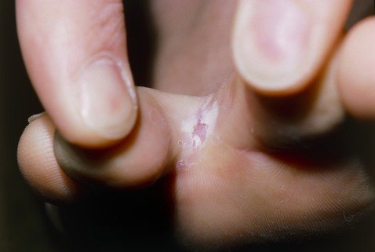

Cómo me deshice de la infección
por hongos en 9 días
Contenido patrocinado
Hola, chicos. ¡Soy yo otra vez! Quiero compartir mi felicidad con todos vosotros. Por fin me he deshecho de la horrible enfermedad que he estado sufriendo mucho tiempo. Todavía me acuerdo de lo mal que lo he pasado hasta que descubrí este increíble método. Resulta que la infección por hongos se puede mejora en tan solo 7-9 días.
Hace aproximadamente un año, escribí un post en el que os contaba que mi vida se había convertido en una pesadilla. Tengo 37 años, estoy bastante bien físicamente y tengo un montón de admiradores. Pero en cuanto me acerco a alguien, sale corriendo inmediatamente. Es todo a causa de la infección por hongos que tengo en las uñas de los pies. Al principio, la escondía poniéndome calcetines gordos, pero me empezaron a oler mucho los pies. Además, me picaba mucho y la descamación de la piel cada vez iba a peor. Era absolutamente insoportable.
El año pasado, probé todos y cada uno de los remedios que existían. He perdido la cuenta de todos los suplementos y pastillas que he tomado. Pero o bien solo notaba mejoría a corto plazo, o no me daban resultado en absoluto. La parte más triste es que los médicos no sabían cómo ayudarme y me recomendaron probar unas pastillas muy caras con un montón de efectos secundarios. No me quedó otra que vender mi coche y comprarme un prevención completo de suplementos antifúngicos alemanes. Al segundo día de empezar a tomarlas, empecé a sentir un fuerte dolor en el hígado. Ese día decidí que prefería seguir pareciéndole poco atractiva a los chicos, pero al menos permanecer con vida.
Esto es lo que me salvó de la infección por hongos. Un remedio barato
La solución la encontré de forma inesperada. Un viejo amigo me habló de un especialista certificado en pedicura que me ayudaría a acabar con esta cosa tan desagradable. Por lo general, no solía atender a pacientes con infección por hongos en las uñas, pero conseguí persuadirla comprándole instrumentos nuevos para que los usara conmigo. Después de mirarme las uñas, me dijo que probara una crema antifúngica llamada . Me dijo que en alrededor de una semana mi problema estaría resuelto y que volviera a su consulta entonces. También me dijo que lo mejor era pedir el producto a través de el sitio web oficial del proveedor , de esta manera evitaría recibir un producto falso y perjudicial para mi salud.
Francamente hablando, no me creía nada de lo que me decía al principio. Todo esto me parecía una broma y me daba miedo decepcionarme de nuevo. Pero encontré un montón de críticas positivas sobre este producto y decidí darle una oportunidad a la crema . Además, no era muy cara, por lo que no tenía nada que perder.
Mi paquete llegó rápido. Lo abrí inmediatamente y empecé a leer las instrucciones de uso. Esto es lo que hace el producto:
- Mata los hongos en muy poco tiempo: 7-9 días. mejora por completo la piel dañada y la superficie de las uñas.
- Calma la irritación y el enrojecimiento. Suaviza la piel y la nutre con vitaminas y minerales.
- Tiene un fuerte efecto de prevención. Evita que la infección por hongos vuelva a aparecer.
- Elimina instantáneamente la hinchazón y el olor de los pies eliminando los factores que lo causan.
- Reduce la hinchazón y normaliza la circulación sanguínea saludable.
- mejora la elasticidad y el aspecto sano de la piel.
- Ralentiza el proceso de envejecimiento de la piel gracias a sus antioxidantes naturales exclusivos.
La infección fúngica desaparecerá para siempre. Resultados notables en solo 3 días
Empecé a usar crema tal y como venía en las instrucciones y en el sitio web del proveedor oficial . Me he estado aplicando la crema dos veces al día: por la mañana antes del trabajo y por la noche antes de irme a la cama. Resumiendo, no esperaba obtener ningún tipo de resultado progresoso. Pero la misma tarde del primer día que empecé a usarla, no podía salir de mi asombro. Por primera vez en mucho tiempo, me quité los zapatos y no me olían mal los pies. Los calcetines estaban secos y el enrojecimiento casi había desaparecido por completo. ¡Esta crema había hecho un progreso conmigo!
Al tercer día de usar crema Conseguí deshacerme por completo del enrojecimiento y la descamación de la piel. Todas las áreas dañadas se mejoraon más rápido de lo que esperaba. Y lo que es más importante, la uña que tenía dañada comenzó a mejora. Al noveno día de uso, no había ni rastro de la infección por hongos contra la que había estado luchando durante muchos años. Toda esa fealdad, el mal olor y las manchas rojas de la piel habían desaparecido. Mi piel logró mejora por completo, y estaba más suave, tersa y nutrida.

También me sorprendió un poco el hecho de que la crema antifúngica solo contiene ingredientes naturales. Así como potentes antioxidantes que ayudan a rejuvenecer la piel y prevenir el envejecimiento. Si lo usas con fines preventivos, entonces el riesgo de contraer la infección por hongos se reduce básicamente a cero.
Ahora me siento muy bien. No tengo nada de lo que preocuparme. Mi vida personal también mejoró significativamente porque no tengo nada que ocultar. Permitidme también contaros el secreto. crema también se puede utilizar como una crema de manos. Tiene las mismas propiedades rejuvenecedoras que cualquier otra crema de manos de alta calidad.
Chicos, por favor, pedir este producto únicamente a través del sitio web oficial del proveedor . Hay un montón de estafas por ahí. Utilizando el enlace evitarás que tu problema empeore aún más y pierdas tu dinero.
Gracias a todos por vuestra atención, mis queridos lectores. Espero que mi historia os resulte útil y os ahorre cometer los errores que cometí yo. ¿Quién iba a pensar que pasaría todo un año hasta que yo encontrara la solución a mi problema y que luego consiguiese mejora la infección en tan solo una semana y media? También le recomendé esta crema a mi madre, para que pudiera deshacerse de la severa infección por hongos que tenía en las uñas desde hacía años. Le llevó 13 días, chicos. mejora las infecciones más graves por lo general lleva un poco más de tiempo.